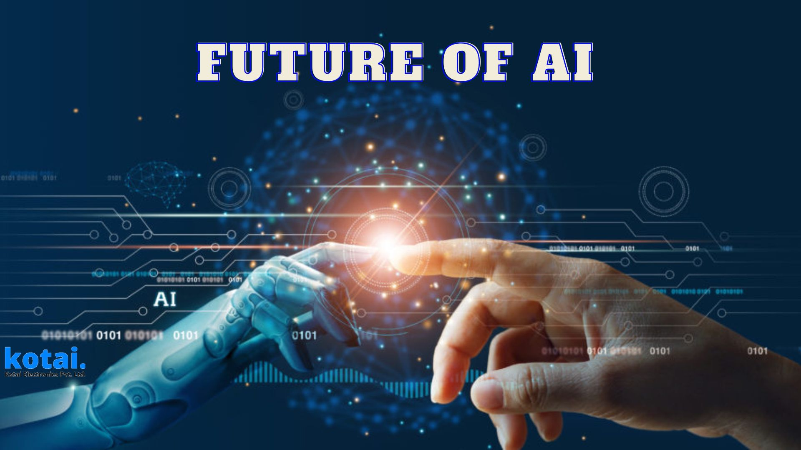
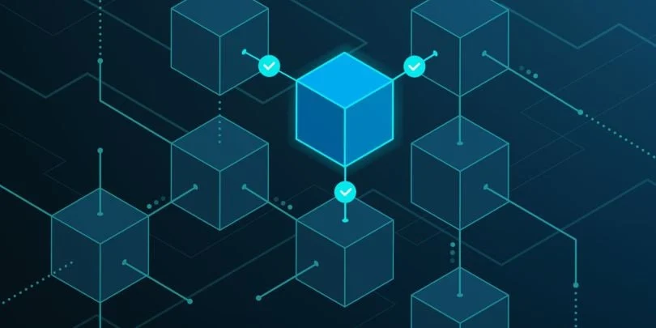

8 იანვარი
ავტორი: ნინო მჭედლიძე
ხელოვნური ინტელექტის მომავალი 2026 წელს
გაეცანით უახლეს ტენდენციებს AI-ის სფეროში და რა ცვლილებებს მოგვიტანს ახალი წელი. ექსპერტები აანალიზებენ ტექნოლოგიის განვითარების ძირითად მიმართულებებს.
7 იანვარი
ავტორი: გიორგი ბერიძე
Web Development-ის ახალი სტანდარტები
როგორ იცვლება ვებ დეველოპმენტი 2026 წელს. განვიხილოთ ახალი ფრეიმვორკები, ინსტრუმენტები და საუკეთესო პრაქტიკები თანამედროვე ვებ აპლიკაციების შესაქმნელად.
6 იანვარი
ავტორი: ანა ქავთარაძე
კიბერუსაფრთხოება დღევანდელ სამყაროში
თანამედროვე საფრთხეები და დაცვის მეთოდები. როგორ დავიცვათ ჩვენი მონაცემები და რა პრევენციული ზომები უნდა მივიღოთ ონლაინ სივრცეში. რა პრევენციული ზომები უნდა.
5 იანვარი
ავტორი: დავით მესხი
Cloud Computing-ის ახალი ეპოქა
ღრუბლოვანი ტექნოლოგიების განვითარება და მათი გამოყენების პერსპექტივები. რა შესაძლებლობებს გვთავაზობს თანამედროვე ღრუბლოვანი პლატფორმები.
4 იანვარი
ავტორი: მარიამ ლომიძე
მობილური აპლიკაციების დიზაინი
UX/UI დიზაინის თანამედროვე ტენდენციები მობილური აპლიკაციებისთვის. როგორ შევქმნათ მომხმარებლისთვის მოსახერხებელი და მიმზიდველი ინტერფეისი.

3 იანვარი
ავტორი: ლევან ჯიქია
Blockchain და კრიპტოვალუტები
Blockchain ტექნოლოგიის გამოყენების სფეროები და კრიპტოვალუტების მომავალი. ანალიზი და პროგნოზები ექსპერტებისგან ციფრული ფინანსების შესახებ.